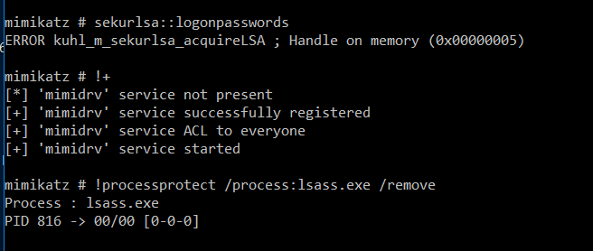
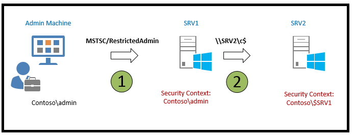

Windows Credentials Protections
Credentials Protections
{% hint style="success" %}
Learn & practice AWS Hacking: HackTricks Training AWS Red Team Expert (ARTE)
HackTricks Training AWS Red Team Expert (ARTE)
Learn & practice GCP Hacking:  HackTricks Training GCP Red Team Expert (GRTE)
HackTricks Training GCP Red Team Expert (GRTE)
Support HackTricks
- Check the subscription plans!
- Join the 💬 Discord group or the telegram group or follow us on Twitter 🐦 @hacktricks_live.
- Share hacking tricks by submitting PRs to the HackTricks and HackTricks Cloud github repos.
WDigest
WDigest 协议于 Windows XP 中引入，旨在通过 HTTP 协议进行身份验证，并且在 Windows XP 到 Windows 8.0 及 Windows Server 2003 到 Windows Server 2012 中默认启用。此默认设置导致在 LSASS 中以明文存储密码（本地安全授权子系统服务）。攻击者可以使用 Mimikatz 通过执行以下命令来提取这些凭据：
sekurlsa::wdigest
要启用或禁用此功能，必须将_HKEY_LOCAL_MACHINE\System\CurrentControlSet\Control\SecurityProviders\WDigest_中的_UseLogonCredential和Negotiate_注册表项设置为“1”。如果这些键缺失或设置为“0”，则WDigest被禁用：
reg query HKLM\SYSTEM\CurrentControlSet\Control\SecurityProviders\WDigest /v UseLogonCredential
LSA 保护
从 Windows 8.1 开始，微软增强了 LSA 的安全性，以 阻止不受信任进程的未经授权的内存读取或代码注入。这一增强阻碍了像 mimikatz.exe sekurlsa:logonpasswords 这样的命令的典型功能。要 启用这种增强保护，应将 HKEY_LOCAL_MACHINE\SYSTEM\CurrentControlSet\Control\LSA 中的 RunAsPPL 值调整为 1：
reg query HKEY_LOCAL_MACHINE\SYSTEM\CurrentControlSet\Control\LSA /v RunAsPPL
Bypass
可以使用 Mimikatz 驱动程序 mimidrv.sys 绕过此保护：

Credential Guard
Credential Guard 是 Windows 10（企业版和教育版） 独有的功能，通过使用 虚拟安全模式（VSM） 和 基于虚拟化的安全性（VBS） 来增强机器凭据的安全性。它利用 CPU 虚拟化扩展将关键进程隔离在受保护的内存空间中，远离主操作系统的触及。这种隔离确保即使是内核也无法访问 VSM 中的内存，有效地保护凭据免受 pass-the-hash 等攻击。本地安全机构（LSA） 在这个安全环境中作为信任小程序运行，而主操作系统中的 LSASS 进程仅充当与 VSM 的 LSA 的通信者。
默认情况下，Credential Guard 并未激活，需要在组织内手动激活。它对于增强抵御像 Mimikatz 这样的工具的安全性至关重要，这些工具在提取凭据的能力上受到限制。然而，仍然可以通过添加自定义 安全支持提供程序（SSP） 来利用漏洞，在登录尝试期间捕获明文凭据。
要验证 Credential Guard 的激活状态，可以检查注册表项 LsaCfgFlags，位于 HKLM\System\CurrentControlSet\Control\LSA。值为 "1" 表示激活并带有 UEFI 锁，"2" 表示没有锁，"0" 表示未启用。此注册表检查虽然是一个强有力的指示，但并不是启用 Credential Guard 的唯一步骤。有关启用此功能的详细指导和 PowerShell 脚本可在线获取。
reg query HKLM\System\CurrentControlSet\Control\LSA /v LsaCfgFlags
为了全面了解和启用 Credential Guard 在 Windows 10 中的说明，以及在兼容的 Windows 11 Enterprise 和 Education (版本 22H2) 系统中自动激活的说明，请访问 Microsoft's documentation。
有关实施自定义 SSP 进行凭据捕获的更多详细信息，请参阅 this guide。
RDP RestrictedAdmin 模式
Windows 8.1 和 Windows Server 2012 R2 引入了几个新的安全功能，包括 RDP 的 Restricted Admin 模式。此模式旨在通过减轻与 pass the hash 攻击相关的风险来增强安全性。
传统上，通过 RDP 连接到远程计算机时，您的凭据会存储在目标机器上。这带来了显著的安全风险，尤其是在使用具有提升权限的帐户时。然而，随着 Restricted Admin 模式 的引入，这一风险大大降低。
当使用命令 mstsc.exe /RestrictedAdmin 启动 RDP 连接时，远程计算机的身份验证是在不存储您的凭据的情况下进行的。这种方法确保在发生恶意软件感染或恶意用户获得远程服务器访问权限的情况下，您的凭据不会被泄露，因为它们并未存储在服务器上。
需要注意的是，在 Restricted Admin 模式 下，从 RDP 会话访问网络资源的尝试将不会使用您的个人凭据；相反，使用的是 机器的身份。
此功能标志着在保护远程桌面连接和敏感信息免受安全漏洞暴露方面的重要进展。

有关更多详细信息，请访问 this resource。
缓存凭据
Windows 通过 本地安全机构 (LSA) 保护 域凭据，支持使用 Kerberos 和 NTLM 等安全协议的登录过程。Windows 的一个关键特性是其能够缓存 最后十个域登录，以确保用户即使在 域控制器离线 的情况下仍能访问他们的计算机——这对经常远离公司网络的笔记本电脑用户来说是一个福音。
缓存登录的数量可以通过特定的 注册表项或组策略 进行调整。要查看或更改此设置，可以使用以下命令：
reg query "HKEY_LOCAL_MACHINE\SOFTWARE\MICROSOFT\WINDOWS NT\CURRENTVERSION\WINLOGON" /v CACHEDLOGONSCOUNT
访问这些缓存凭据的权限受到严格控制，只有 SYSTEM 账户拥有查看它们所需的权限。需要访问此信息的管理员必须以 SYSTEM 用户权限进行操作。凭据存储在： HKEY_LOCAL_MACHINE\SECURITY\Cache
Mimikatz 可以通过命令 lsadump::cache 提取这些缓存凭据。
有关更多详细信息，原始 source 提供了全面的信息。
受保护用户
加入 受保护用户组 的成员为用户引入了几项安全增强措施，确保对凭据盗窃和滥用的更高保护级别：
- 凭据委派 (CredSSP)：即使启用了 允许委派默认凭据 的组策略设置，受保护用户的明文凭据也不会被缓存。
- Windows Digest：从 Windows 8.1 和 Windows Server 2012 R2 开始，系统将不会缓存受保护用户的明文凭据，无论 Windows Digest 状态如何。
- NTLM：系统不会缓存受保护用户的明文凭据或 NT 单向函数 (NTOWF)。
- Kerberos：对于受保护用户，Kerberos 认证不会生成 DES 或 RC4 密钥，也不会缓存明文凭据或超出初始票证授予票 (TGT) 获取的长期密钥。
- 离线登录：受保护用户在登录或解锁时不会创建缓存验证器，这意味着这些账户不支持离线登录。
这些保护措施在 受保护用户组 的成员登录设备时立即激活。这确保了关键安全措施到位，以防止各种凭据泄露的方法。
有关更详细的信息，请查阅官方 documentation。
Table from the docs.
| Windows Server 2003 RTM | Windows Server 2003 SP1+ | Windows Server 2012, | Windows Server 2016 |
|---|---|---|---|
| Account Operators | Account Operators | Account Operators | Account Operators |
| Administrator | Administrator | Administrator | Administrator |
| Administrators | Administrators | Administrators | Administrators |
| Backup Operators | Backup Operators | Backup Operators | Backup Operators |
| Cert Publishers | |||
| Domain Admins | Domain Admins | Domain Admins | Domain Admins |
| Domain Controllers | Domain Controllers | Domain Controllers | Domain Controllers |
| Enterprise Admins | Enterprise Admins | Enterprise Admins | Enterprise Admins |
| Enterprise Key Admins | |||
| Key Admins | |||
| Krbtgt | Krbtgt | Krbtgt | Krbtgt |
| Print Operators | Print Operators | Print Operators | Print Operators |
| Read-only Domain Controllers | Read-only Domain Controllers | ||
| Replicator | Replicator | Replicator | Replicator |
| Schema Admins | Schema Admins | Schema Admins | Schema Admins |
| Server Operators | Server Operators | Server Operators | Server Operators |
{% hint style="success" %}
Learn & practice AWS Hacking:HackTricks Training AWS Red Team Expert (ARTE)
Learn & practice GCP Hacking: HackTricks Training GCP Red Team Expert (GRTE)
Support HackTricks
- Check the subscription plans!
- Join the 💬 Discord group or the telegram group or follow us on Twitter 🐦 @hacktricks_live.
- Share hacking tricks by submitting PRs to the HackTricks and HackTricks Cloud github repos.